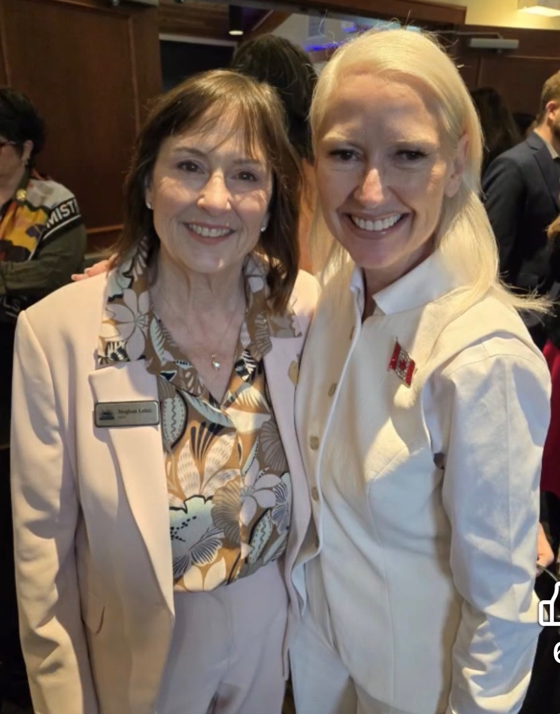
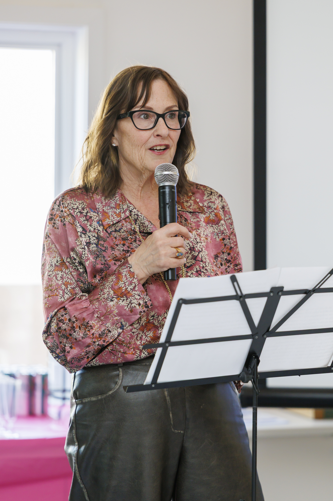
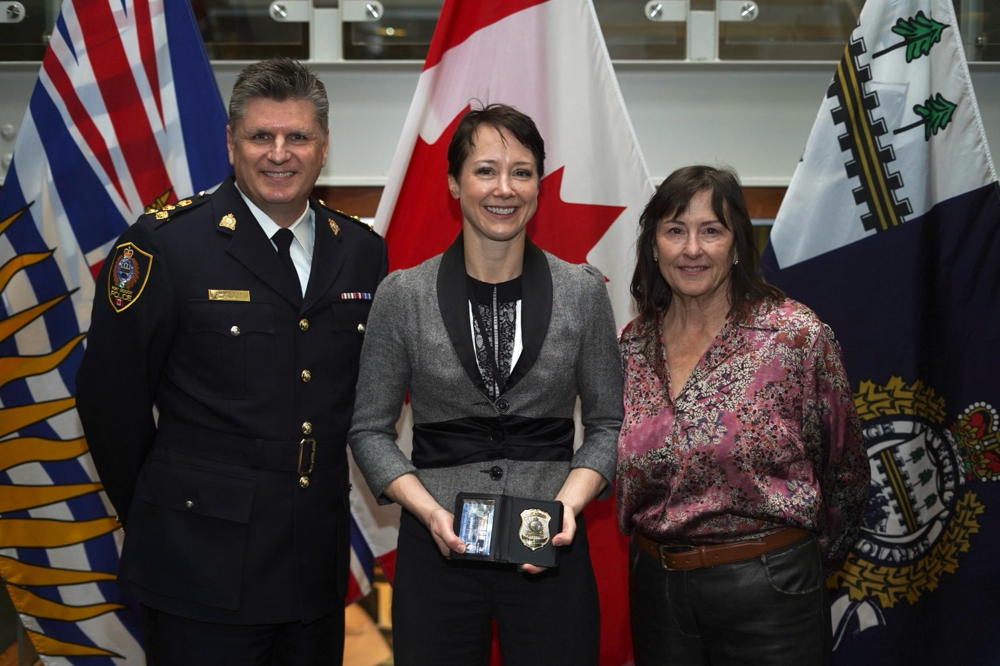
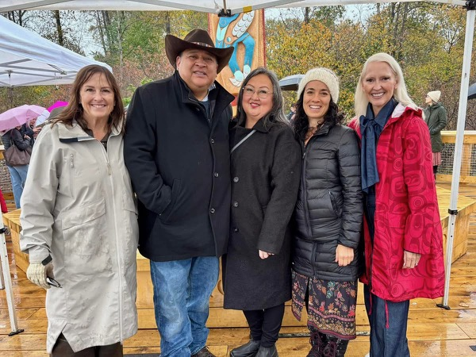

Housing built for the people who live here.
Affordable, family-sized, and built into deals that include daycares, grocery stores, and the everyday things a neighbourhood needs.

Port Moody’s housing affordability crisis is real, and Meghan has been clear that it is a nuanced and complex issue that does not get solved by a single policy lever. Rents are too high. Ownership is out of reach for most young families. Seniors who have owned their homes for thirty years cannot downsize and stay in the city. At the end of the day, her goal has always been to ensure that housing actually gets built. Built thoughtfully, with strong negotiation, and with the things a neighbourhood needs written into the deals as conditions.
New provincial legislation has mandated small-scale multi-unit housing across British Columbia. In practice, that means duplexes, garden suites, side-by-side townhomes, and fourplexes are coming to every municipality, including Port Moody. Meghan sees this as an opportunity, not a problem, if it’s introduced carefully.
These are housing options Port Moody seniors haven’t had in a long time: the chance to downsize without leaving the neighbourhood they’ve lived in for decades, close to grandkids and familiar streets. They’re options young families haven’t had either, the kind that come with a yard and a real home at a price within reach. Whether this happens isn’t really the question anymore, because the province has already decided that. The real question is how Port Moody shapes it: introducing it neighbourhood by neighbourhood, matching the scale and character of what’s already there.
“It’s not about giving developers whatever they want. It’s about making sure that things are done on our terms.”
Meghan Lahti · Tri-City News · 2022Transportation that keeps up with the city.
Infrastructure built alongside growth. Regional advocacy on the issues no city solves alone.

Traffic congestion is the issue Meghan hears about most consistently from residents. Barnet Highway, St. Johns Street, the Ioco Road corridor, these are the daily reality for Port Moody families. Her position on them has not changed since 1996: traffic is a regional problem that requires regional solutions, and Port Moody’s job is to be at the table for them.
That has meant working with TransLink and Metro Vancouver on Barnet Highway congestion, advocating for the Murray-Clark connector, and pushing for transit-on-demand programs that make SkyTrain and bus connections more usable for more residents. It has also meant insisting that infrastructure gets built before, or at minimum alongside, the density that demands it. Every major development approved under her leadership has included infrastructure contributions as a condition of approval.
“People really wanted to see something different — a council that could work together and actually get things done. Not dig in. Not delay. Do the work.”
Meghan Lahti · Election Night, 2022Transparency, accountability, and the open door.
Open communication, accessible leadership, and the daily practice of running a city in public.

Effective leadership is rooted in transparency, accountability, and accessibility, and Meghan has built her first term as Mayor around that practice. She has prioritized open communication with the community, ensuring residents are informed before, not after, the decisions that shape their lives are made. She fosters partnerships with local organizations, businesses, and citizens because she has been consistent on this for thirty years: collaboration is essential to solving Port Moody’s real challenges.
During her first term, Meghan created new direct channels between City Hall and the community. She hosted Mayor’s Town Halls on snow removal, revenue diversification, park expansion, and the Official Community Plan. She launched two Mayor’s Youth Summits, making sure the voices of Port Moody’s next generation are heard at City Hall. Her commitment is to an environment where diverse voices are heard, and where residents trust that their city is being run with integrity.
“Good governance means transparency, accountability, and collaboration. Together, we can create a thriving community where every voice matters and every person feels valued.”
Meghan LahtiThe experience to actually deliver.
Thirty years of relationships, files, and the institutional knowledge that turns plans into projects.

Meghan’s political career did not start with a campaign. It started in 1994, when she was a young mother of three and Bert Flinn Park came under threat. She did not write a letter — she ran for office. By 1996 she was on Port Moody City Council, and the same instinct that brought her there has carried her every year since: do the homework, build the relationships, and deliver.
In the years since 1996, that has meant 15 consecutive years chairing Port Moody’s Finance Committee, 16 years as a Metro Vancouver Director and Alternate Director representing Port Moody at the regional level, and a record of negotiating community amenity contributions, infrastructure dollars, and amenity packages into every major project that has been approved. In 2019, she was recognized with the national environmental Clements Award in the category of Most Outstanding Canadian Politician.
Promises are easy. Negotiating more than $99 million across the Coronation Park project, and senior-government funding for 328 affordable homes at Portwood requires knowing the file, knowing the relationships, and knowing how to do the work.
“This city doesn’t happen by accident. It happens because people decide to show up.”
Meghan LahtiFiscal responsibility, line by line.
Growth pays for growth. A commercial tax base reduces the burden on homeowners. Every dollar accounted for.

Fiscal responsibility, requires experience. Experience is fifteen years of chairing Port Moody’s Finance Committee, multi-million-dollar budgets managed through a twenty-year career in post-secondary education before public office, and the daily practice of negotiating community amenity contributions, development cost charges, and infrastructure dollars into every major project approved.
That is also where the commercial tax base comes in. Coronation Park alone delivered more than $99 million in community amenity contributions, infrastructure upgrades, public art, and parkland dedications. These are the dollars that reduce the burden on existing homeowners over time, and they exist because the experience to negotiate for them was delivered.
Murray Street is Port Moody’s most distinctive economic asset. The Burrard Thermal site represents a generational opportunity for good jobs on the waterfront. Meghan’s position has been consistent: protect what works, push for the jobs the city is missing, and never let fiscal mismanagement become the reason a service has to be cut.
“Growth has to pay for growth. The negotiation is the difference between a project that gives back and one that just shows up.”
Meghan Lahti